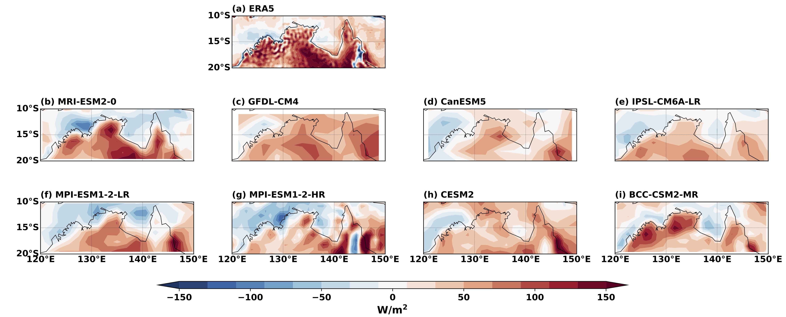
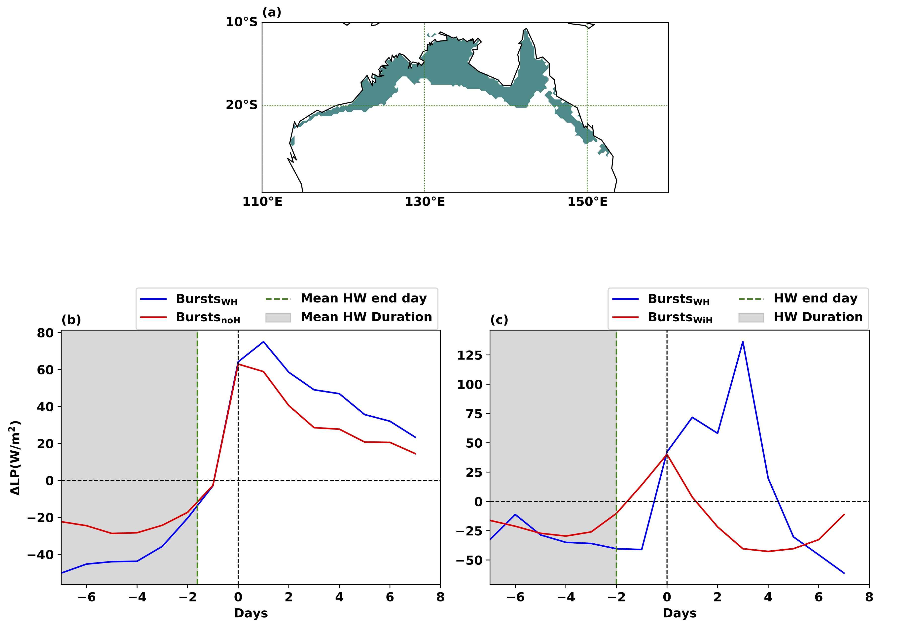
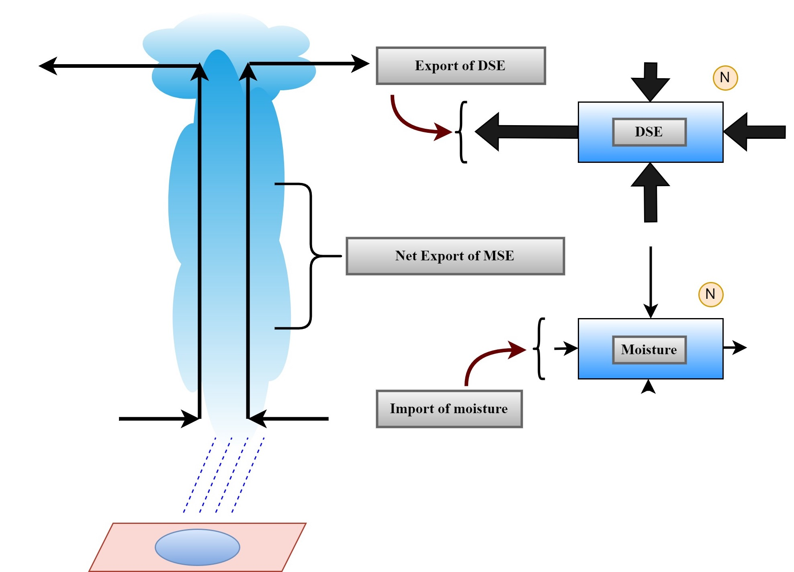
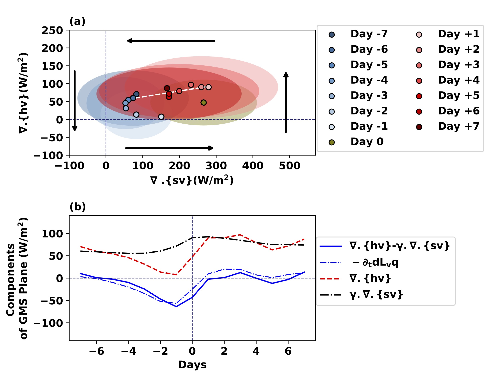
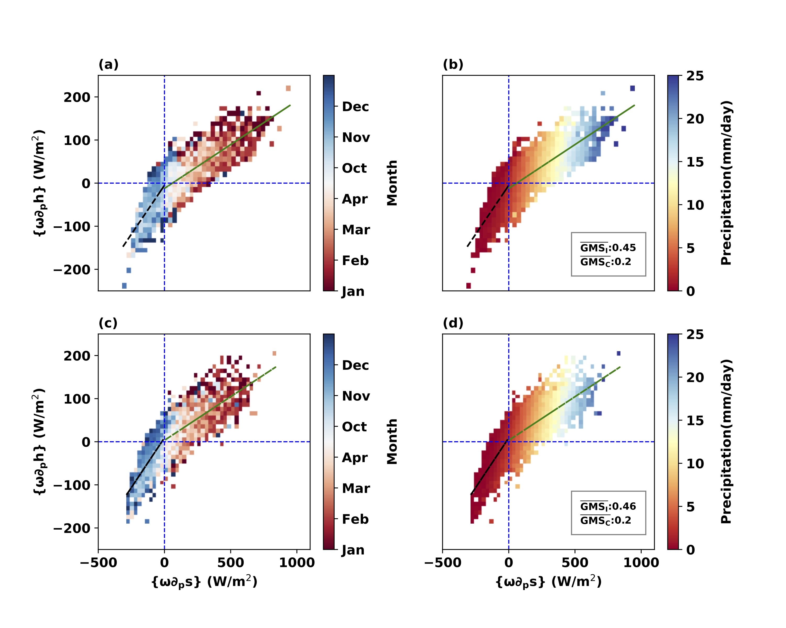
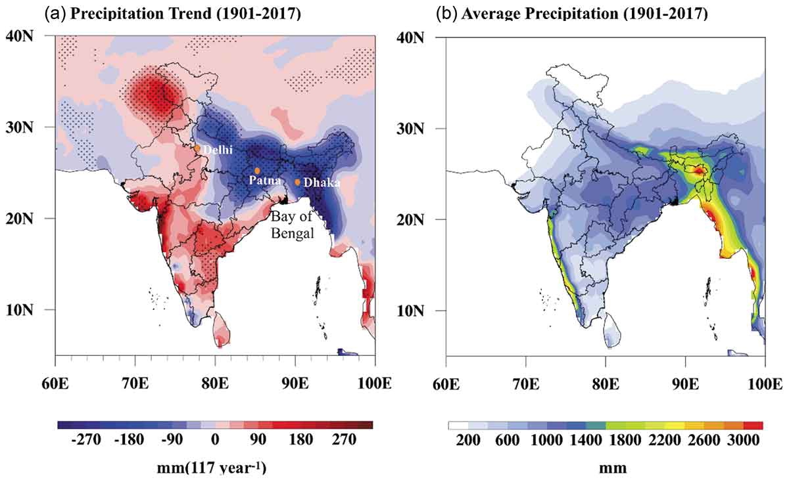

About me
I am a dedicated academic and climate scientist with profound expertise in atmospheric dynamics. My academic journey is highlighted by multiple publications and ongoing research projects that underscore my deep understanding of climate modeling and statistical climatology. I am currently a Postdoctoral Research Fellow at the IBS Center for Climate Physics in South Korea, where I work on understanding climate impacts on mammal evolution and migration by contributing to existing vegetation and mammal models and developing coupled dynamics between them. Previously, I was part of the Data61 team at CSIRO, applying my skills to enhance our knowledge of climate dynamics. I recently completed my Ph.D. at Monash University's School of Earth, Atmosphere, and Environment in Australia. My educational foundation includes a dual-degree (BS and MS) in Geosciences, which I earned from the Indian Institute of Science Education and Research, Kolkata, in 2019. This combination of practical experience and academic rigor equips me to make significant contributions to the field of climate science, driving forward our understanding and mitigation of climate change.
Recent Research Highlights
The Moist Static Energy Budget of Australian Summer Monsoon Bursts in Climate Models: Insights From Present and Warming Climate Scenarios

This study investigates the complex dynamics of burst evolution in the Australian summer monsoon under present-day and warmer climate conditions. Using reanalysis data, historical atmosphere-only simulations (AMIP), and simulations with uniformly increased sea surface temperatures (+4K; AMIP+4K), we examine how seasonal-mean precipitation and burst behavior respond to warming across eight climate models.... A consistent link emerges between higher seasonal-mean precipitation and a greater number of bursts. A moist static energy budget analysis reveals that horizontal moisture advection governs burst evolution, while model-specific parameterizations add variability in burst characteristics. Some models show gradual transitions governed by horizontal moisture advection, others display abrupt shifts absent in reanalysis. Among the three models with AMIP+4K simulations, MRI-ESM2-0 and BCC-CSM2-MR reproduce seasonal precipitation patterns close to their AMIP counterparts, with burst frequencies nearly unchanged in BCC-CSM2-MR and slightly reduced in MRI-ESM2-0. Only MRI-ESM2-0 captures a gradual, physically consistent burst evolution resembling reanalysis, whereas BCC-CSM2-MR still shows abrupt transitions. IPSL-CM6A-LR, the third model with AMIP+4K simulations, shows a gradual evolution but produces stronger mean precipitation and fewer bursts—contrary to the typical positive precipitation–burst relationship. Cluster-based composites show that precipitation changes arise from differing contributions of thermodynamic and dynamic components of vertical moisture advection. In MRI-ESM2-0, enhanced precipitation in warming scenarios is mainly driven by stronger thermodynamic moistening, whereas in IPSL-CM6A-LR, dynamically induced drying offsets thermodynamic gains, particularly in specific burst clusters. These results emphasize model-dependent monsoon burst responses and the need to separate dynamic and thermodynamic influences to strengthen confidence in future hydro-climate projections. More info
Precipitation bursts in northern Australia with and without preceding heatwaves

Compound climate extremes have significant societal and ecological impacts, yet their drivers in tropical regions remain poorly understood. For example, although global evidence increasingly highlights interactions between heatwaves and precipitation, the specific mechanisms driving these compound events in Northern Australia remain poorly characterized,... particularly the contrasting influence of atmospheric circulation and temperature-driven thermodynamic processes. Motivated by these gaps, this study investigates the interaction between heatwaves and precipitation bursts in Northern Australia during the pre- and post-monsoon seasons. We employ a vertically integrated moisture budget framework to systematically contrast precipitation bursts preceded by heatwaves with those occurring independently. Heatwave-associated bursts exhibit stronger and more prolonged convective activity, resulting in intensified peak precipitation and delayed maxima compared to independently occurring bursts. Vertical moisture advection is the dominant mechanism, accounting for over 70% of the variability in column-integrated moisture flux. A further decomposition reveals that the dynamic component of vertical advection — driven by circulation anomalies — plays a more substantial role than the thermodynamic component in driving these changes. These events coincide with anomalously low mean sea level pressure and enhanced cyclonic circulation, and are observed alongside sustained convective processes. Collectively, our findings highlight the role of atmospheric circulation in shaping these compounded heat and precipitation extremes in tropical Northern Australia. More info
Australian Summer Monsoon Rainfall: A Moist Static Energy Budget Perspective

The Australian summer monsoon (ASM) is a crucial component of Northern Australia's hydro-climate, impacting regions like the northern territory and northern Queensland. This study employs the moist static energy (MSE) budget and gross moist stability (GMS) to analyze the ASM's seasonal cycle and monsoon bursts... —periods of heightened rainfall lasting one to two weeks. Our analysis reveals that while climate models capture the influence of moisture and energy import and export from adjacent regions, they struggle with quantitative accuracy. The models tend to overestimate GMS during convective periods due to a disproportionately strong upper-atmospheric ascent. This discrepancy highlights the limitations of evaluating models based solely on precipitation data. Further, we classify monsoon bursts into pre-monsoon, active, and post-monsoon phases using ERA5 and MERRA-II data, identifying distinct burst characteristics and their impact on seasonal rainfall patterns. Our findings indicate significant model variability in representing these bursts, suggesting that model-specific physics parameterizations contribute to these differences. Additionally, by comparing current climate conditions with a projected 4K increase in sea surface temperatures, we observe notable changes in burst frequency and precipitation dynamics, underscoring the models' sensitivity to warming scenarios. This study emphasizes the complexity of precipitation variability within the ASM and the importance of considering both thermodynamic and dynamic aspects of the moisture budget to understand monsoon behavior more effectively. More info
Australian Summer Monsoon Bursts; A Moist Static Energy Perspective

The Australian Summer Monsoon (ASM) is associated with sequences of wet and dry conditions known as bursts and breaks during the extended summer months (October–April). Although understanding of these phenomena has progressed, there are still gaps in both our knowledge of the processes that produce bursts... and our ability to predict their evolution. Energy budgets are evaluated in this study to gain insight into the key mechanisms involved in burst evolution. It is found that energy export/import via large-scale circulation is critical in determining the evolution of monsoon bursts. Furthermore, the research identifies various types of bursts, each with its own set of key mechanisms. These findings provide important insights into the dynamics of the ASM bursts and may help improve predictions of future bursts and breaks, allowing for better management of the region's agricultural and ecological systems. More info
Australian Summer Monsoon: Reanalyses Versus Climate Models in Moist Static Energy Budget Evolution

The Australian summer monsoon (ASM) influences the tropical hydro-climate of Northern Australia during the extended summer months (October–April). Despite advances in understanding the ASM, climate models vary widely in their depiction and projections of its future behavior remain uncertain... This study investigates the moist static energy (MSE) budget and examines the gross moist stability (GMS) evolution throughout the monsoon cycle using two reanalysis data sets. We then assess the ability of Atmospheric Modeling Intercomparison Project (AMIP) simulations of climate models to reproduce not only the monsoon seasonal cycle of rainfall but the associated mechanisms revealed by the budget analysis. The budget analysis shows a strong influence of the regions to the north and west of our study area for the import of moisture and export of energy into and away from the ASM. We find that models reproduce this influence qualitatively, but not quantitatively. As in previous studies, we identify two major regimes of the GMS associated with the absence (higher GMS) or presence (lower GMS) of convection. Whilst climate models are able to distinguish the two regimes, they significantly overestimate the GMS in convectively active periods, owing largely to profile of ascent that is too top heavy. Models with more realistic precipitation do not consistently offer more accurate representations of dynamic processes, as evaluated by the MSE budget and GMS. This highlights limitations in assessing models based solely on single variables. To enhance the generalizability of these findings, future studies should employ models without prescribed sea surface temperatures. More info
Possible role of warming on Indian summer monsoon precipitation over the north-central Indian subcontinent

Broad disagreement between modelled and observed trends of Indian summer monsoon (ISM) over the north-central part of the Indian subcontinent (NCI) implies a gap in understanding of the relationship between the forcing factors and monsoonal precipitation... Although the strength of the land–sea thermal gradient (LSG) is believed to dictate monsoon intensity, its state and fate under continuous warming over the Bay of Bengal (BoB) and part of the NCI (23–28°N, 80–95°E) are less explored. Precipitation (1901–2017) and temperature data (1948–2017) at different vertical heights are used to understand the impact of warming in the ISM. In NCI, surface air temperature increased by 0.1–0.2°C decade−1, comparable to the global warming rate. The ISM precipitation prominently weakened and seasonality reduced after 1950, which is caused by a decrease in the LSG at the depth of the troposphere. Warming-induced increase in local convection over the BoB further reduced ISM precipitation over NCI. More info